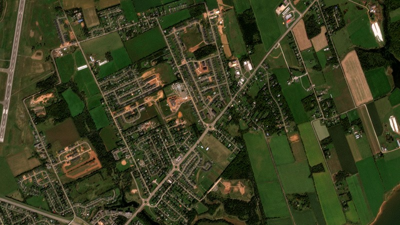
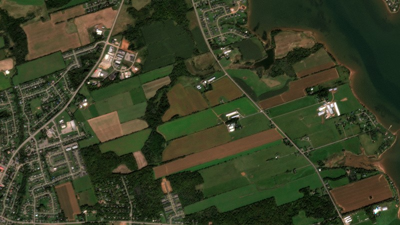
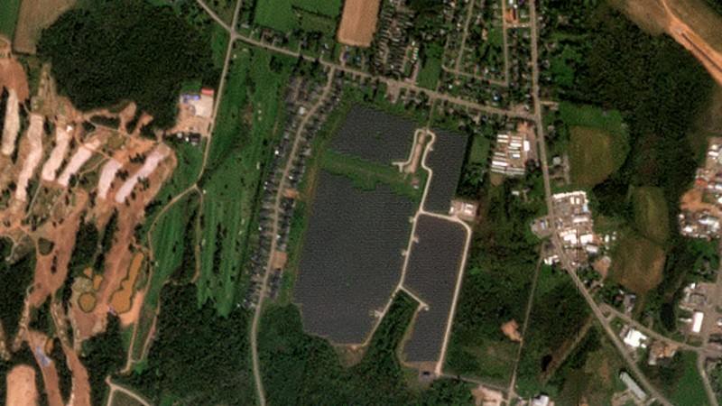
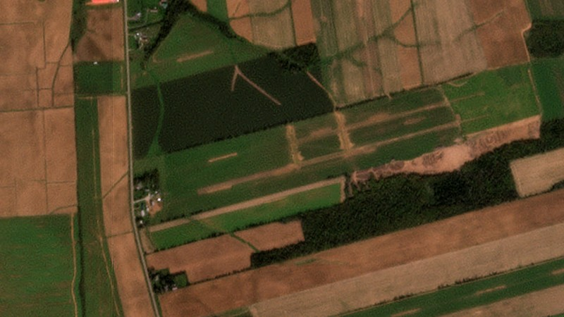
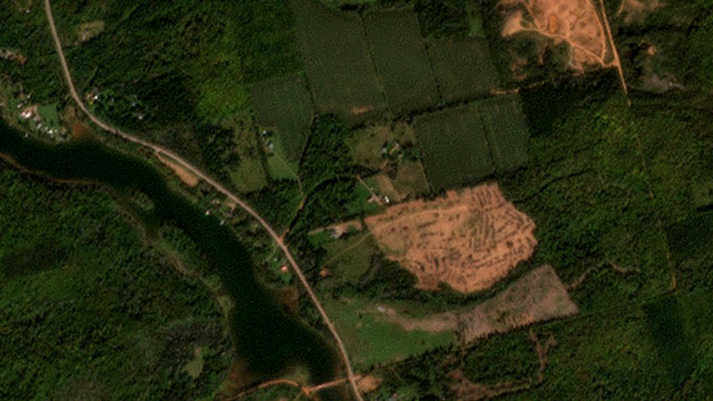
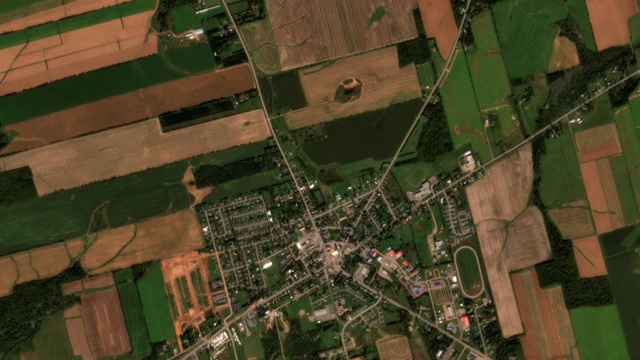
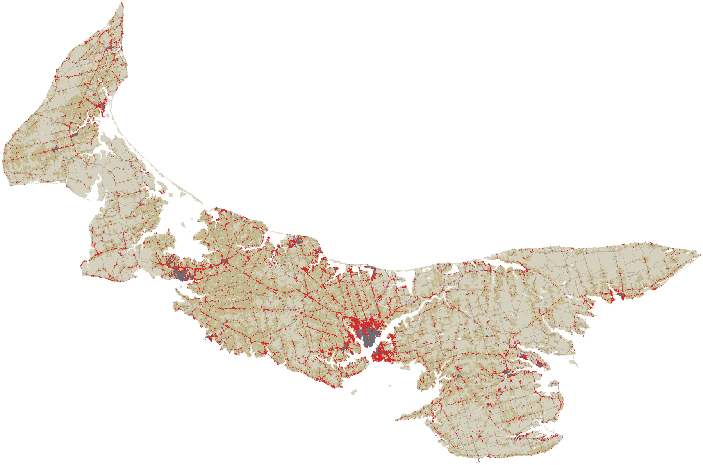

Where PEI's farmland went
Aerial photos going back to 1935, satellite land-use maps from 2000–2020 and a century of Census of Agriculture figures show where Island fields became houses, roads and shopping plazas.
Then and now, field by field
Pick an area, then drag across the photo to compare years. Use Enlarge to fill the window, or click any photo or map further down to open it larger. Each view is about 3.4 km across. Red marks 30 m cells that were cropland in 2000 and built up by 2020.
The 1935 and 1958 mosaics carry some hand-drawn survey markings from the original prints.
Aerial photos: Government of Prince Edward Island; mosaics courtesy of the University of Prince Edward Island. Red overlay derived from Agriculture and Agri-Food Canada Land Use data (OGL–Canada).
What changed after 2020: a Planet satellite check
A separate analysis compared 3 m PlanetScope monthly mosaics from September 2017 and September 2026 at 26 sampled sites in all three counties. It ran in Planet's AI Deep Research tool, which is in beta. Conversion showed up at 17 sites. It confirms that the hotspots above kept growing after the 2020 photos, and it picks up a new driver the older maps miss: ground-mounted solar farms.
| County | Sites | Converted (ha) | Main drivers |
|---|---|---|---|
| Queens | 13 | 140–183 | Housing, commercial, one solar array |
| Prince | 6 | 56–72 | Two solar arrays, commercial, housing |
| Kings | 7 | 5–6 | Housing infill at Montague only. No change at Souris or the rural sites |






All 26 Planet sample sites
| Site | County | Result | ha |
|---|
How the two analyses fit together
- They cover different periods. The Agriculture Canada maps give an island-wide figure for 2000–2020 (about 5,480 ha). Planet samples 2017–2026 at selected sites only. Don't add the two figures together.
- Both point to the same places: East and West Royalty, Cornwall, Stratford and Summerside.
- Planet cites reporting that PEI lost 12% of its farmland between 2016 and 2021. That matches the census figures above: farm area fell from 232,893 to 204,234 ha (−12.3%), about 39 acres a day.
Limits of the Planet figures
- The areas are AI-assisted visual estimates from 3 m imagery, given as ranges. They are not parcel surveys.
- Sites were chosen at town edges and from search hits, so the 200–260 ha total isn't an island-wide estimate. Western Prince County and road corridors weren't surveyed.
- Some converted land was scrub or woodland rather than active cropland (West Royalty, the north-shore sites).
The whole Island, 2000–2020
Built-up land spread outward from Charlottetown, Stratford, Cornwall and Summerside. It also spread along almost every rural road, one house lot at a time. Click a dot to load that area in the viewer above.

Map derived from Agriculture and Agri-Food Canada Land Use 2000 and 2020. Contains information licensed under the Open Government Licence – Canada.
A century of farm area
Census of Agriculture totals for Prince Edward Island. Total farm area includes woodland and pasture on farms. Much of the long decline is land leaving farming or growing back into forest, not just land being built on.
Source: Statistics Canada, Table 32-10-0153-01, Land use, Census of Agriculture historical data (adapted).
Satellite land use by year
| Year | Cropland (ha) | Built up (ha) | Forest (ha) | Cropland → built up since previous map (ha) |
|---|
Satellite maps show cropland grew slightly overall (+5,600 ha) as about 16,800 ha of forest was cleared. The loss happened on specific fields, mostly the flat, accessible land near towns and roads. Much of the 2005–2010 jump coincides with AAFC adding its "newly detected settlement" classes, so the 20-year total is more reliable than any single period.
Source: Agriculture and Agri-Food Canada, Land Use 2000–2020 (30 m), OGL–Canada. Areas calculated for this report.